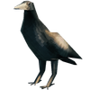
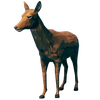
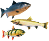
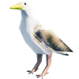
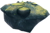
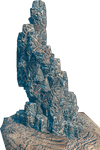
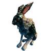

被动生物攻略
本地离线版支持中英文站内搜索。带 ↗ 的链接需联网；中文采用用户词表，各页来源版本见页脚。
温顺生物不攻击玩家或其他生物，但击杀或采集后提供有用资源。有时看似难杀，合适策略可大幅简化。
乌鸦


乌鸦偶尔落地，容易瞄准，但靠近会迅速飞走，建议用弓或掷出矛等远程武器击杀。
根据游戏提示和玩家观察，乌鸦夜间及暴风雨更常落地，适合刷羽毛。
鹿


鹿附近常发出呜鸣，较容易定位。找到后建议蹲下、保持距离，用弓等远程武器在其警戒前安静击杀。
被玩家或敌对生物惊动的鹿，会逃至不易被近距离攻击的位置。若已警戒，可等片刻，让其平静并停止逃跑。
鱼


鱼高于水面时可抓取获得生鱼肉。徒手捕捉可站在浅水不动，等鱼慢慢靠近，再把准星对准。也可追入浅水或狭窄水域，便于捕获。
鱼大小不同，产出生鱼肉不同。金枪鱼最多，4份，通常离岸更远，移动也快得多。
海鸥


海鸥偶尔落地，容易瞄准，但靠近迅速飞走，建议用弓或掷出矛远程击杀。深渊鱼叉很适合，因为不像矛需要拾回。
根据游戏提示和玩家观察，海鸥夜间及暴风雨更常落地，适合刷羽毛。
利维坦


利维坦的21个深渊藤壶各有40生命，攻击任一都可能触发下潜，即使未完全破坏。始终保持较高耐力，停船时让梯子朝向利维坦；若它下潜，需游回并登船才能生存。
更高镐技能和更好镐减少开采藤壶所需次数，在下沉前获取更多甲壳素。站位也重要，距藤壶太远，伤害会分摊给藤壶及无敌的利维坦外壳。
熔岩利维坦


更高镐技能和更好镐减少焰金属节点开采次数，下沉前获取更多矿石。站位也重要。熔岩利维坦足够靠近非熔岩地面时，可冒险用攻城锤，最大化破坏地面层节点数量。
野兔


| 攻略 | |
|---|---|
| 玩家 | |
| 战斗 | |
| 生成 | |
| 建材 | |
| 界面 | |
| 世界 | |
| 杂项 | |
| 开发 | |
Passive creatures do not attack the player or other creatures, but provide useful resources when killed (or harvested). Sometimes, these creatures seem to be difficult to kill, but using the right strategy will make killing them much easier.
Crow
Every now and then, a crow will land, which will make it an easy target. However, they will quickly fly away when approached, so it is advised to kill them using a ranged weapon such as a bow or a throwing spear.
As suggested by in-game tips and players observations, crows tend to land more often during the night and during storms. These are good times to farm for feathers.
Deer
Locating a deer is relatively simple, as they will often emit a whimpering call when nearby. Once located, it is advised is to crouch and keep ample distance from the deer. Use ranged weapons such as a bow to quietly kill them before they become alerted.
Deer who are alerted by players and other hostile creatures will attempt to flee until they are no longer within close range of being attacked. If alerted, the player can wait a short while before the deer calms and stops trotting away.
Fish
Fish can be caught by hand or using a Fishing Rod and Fishing Bait which can be purchased from the trader.
You can obtain Raw Fish by grabbing the fish if it above the water. When catching fish by hand, stand still in shallow water and they will slowly approach. Move your crosshair over the fish. It is also possible to chase fish into a shallow or narrow body of water to more easily catch them.
Fish come in different sizes and give different amounts of raw fish. Tuna give the most raw fish at 4 pieces. Tuna are found further out from shore and move much faster than other fish.
Gull
Every now and then, a gull will land, which will make it an easy target. However, they will quickly fly away when approached, so it is advised to kill them using a ranged weapon such as a bow or a throwing spear. Abyssal harpoons are very good as they don't need to be picked up like the spear
As suggested by in-game tips and players observations, gulls tend to land more often during the night and during storms. These are good times to farm for feathers.
Leviathan
Each one of a Leviathan's 21 Abyssal barnacles have 40 Health and attacking any of them has a chance to trigger the submerge event even if the barnacle isn't fully destroyed. Try to keep your stamina high at all times and make sure you parked the boat with the ladder-side facing the Leviathan, since if the Leviathan submerges while you are still on it, you will need to swim to your boat and climb onboard it in order to survive.
Higher pickaxe skill and better pickaxes allow mining barnacles with fewer hits, which allows getting more Chitin before the sinking gets triggered. Positioning also matters. If there is too much space between the player and the barnacle, the damage will be split between the barnacle and the invulnerable Leviathan shell.
Lavaiathan
Higher pickaxe skill and better pickaxes allow mining flametal nodes with fewer hits, which allows getting more flametal ore before the sinking gets triggered. Positioning also matters. Alternatively, a player may wish to risk the strategy of employing a battering ram on the ore vein if the lavaiathan is close enough to non-lava terrain in order to maximize the number of ore nodes broken at ground level.
Hare
Hares behave similarly to deer, but due to the limited visibility of the Mistlands, it is difficult to spot Hares from afar before alerting them. For this reason, the Arbalest can be a useful weapon for hunting them, thanks to its ability to instantly fire a loaded bolt in a straight line.
| Guides | |
|---|---|
| Player | Player • Health • Stamina • Eitr • Adrenaline • Death • Forsaken power • Skills • Status effects • Movement speed • Magic • Fishing • Riding • Sleeping • Emotes |
| Combat | |
| Spawning | |
| Building | |
| UI | |
| World | |
| Misc | |
| Development | |